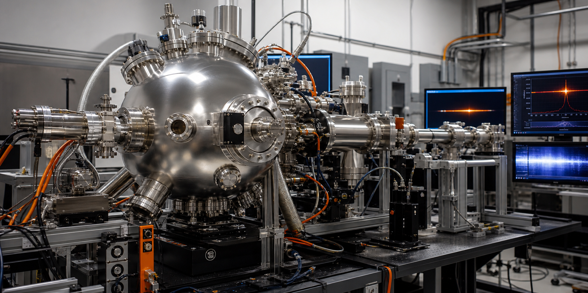

Auburn University
Laboratory Astrophysics
Experimental, theoretical, and observational AMO research for astrophysics, astrochemistry, planetary science, heliophysics, and laboratory plasmas.
Research Scope
Laboratory measurements and models that make astronomical spectra interpretable.
Facilities
Flexible infrastructure for collision physics, spectroscopy, and data interpretation.
People
Group members
Faculty, PIs, postdocs, and researchers
Each summary stays short by design. External links route visitors to maintained Auburn, Google Scholar, and ORCID records instead of duplicating CV content here.
Graduate students
Student cards are intentionally brief: name, project area, and durable external profile links when available. Add or remove names in one data list as the group changes.
Collaborations
Built for shared problems across laboratory, observational, and mission science.
Recent Papers
Recent papers and research terms
Loading research terms...
- Loading recent papers...